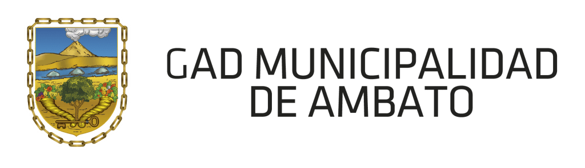

.png)
Seguridad Industrial Avanzada
Equipos de
Protección
Personal
La barrera definitiva para la integridad del trabajador. Descubre la normativa técnica, clasificación y protocolos esenciales de seguridad.
Sigue bajando
Seguridad Industrial Avanzada
La barrera definitiva para la integridad del trabajador. Descubre la normativa técnica, clasificación y protocolos esenciales de seguridad.
Sigue bajandoDefinición Técnica
Todo dispositivo o vestimenta diseñado para ser utilizado por el individuo y evitar lesiones.
Los Equipos de Protección Personal (EPP) son la última línea de defensa en la seguridad laboral. Su función principal es proteger al trabajador de peligros que no han podido ser eliminados mediante controles de ingeniería o administrativos.
A diferencia de la protección colectiva (como barandillas), el EPP es de uso individual y obligatorio bajo normativas internacionales como ISO 45001 y los convenios de la OIT.
Clasificación

Protección Craneal
Cascos certificados contra impactos mecánicos, caída de objetos y riesgos eléctricos.

Protección Ocular
Gafas de seguridad y pantallas faciales contra proyecciones y radiación UV.

Protección Respiratoria
Sistemas de filtrado para atmósferas con polvos, humos, gases o vapores químicos.

Protección Manual
Guantes técnicos contra riesgos mecánicos, químicos, térmicos o eléctricos.

Protección de Pies
Calzado con puntera reforzada, suela antideslizante y resistencia a perforaciones.

Protección de Altura
Equipos de detención de caídas para trabajos por encima de 1.80 metros.
Aval Institucional
Seguro de Riesgos del Trabajo. Principal ente regulador y prestador de salud laboral en el Ecuador.
Unidad Educativa líder en formación técnica integral y compromiso con la cultura preventiva.

Gobierno Municipal que regula y promueve estándares de seguridad industrial en el sector urbano.
Estadísticas Vitales
60%
de las lesiones fatales se evitarían con el uso del casco y arnés adecuado.
2.3M
muertes anuales registradas por la OIT debido a enfermedades o accidentes laborales.
340M
accidentes no fatales ocurren al año, dejando discapacidades en miles de trabajadores.
Marco Legal
Norma mundial para Sistemas de Gestión de Seguridad y Salud en el Trabajo.
Certificación de máxima exigencia para equipos de protección respiratoria en EE.UU.
Certifica que el producto cumple con los requisitos legales y técnicos de seguridad de la Unión Europea.
Normas Técnicas Ecuatorianas que dictan la calidad mínima de los EPP en el país.
Protocolo de Aplicación
Detectar grietas, rasgaduras o vencimiento del equipo antes de cada jornada laboral.
El EPP debe ajustarse firmemente pero permitir la movilidad. Un arnés flojo es un riesgo fatal.
La protección debe mantenerse durante el 100% del tiempo de exposición al riesgo.
Higienizar los equipos con productos no corrosivos para no degradar los materiales.
Guardar en lugares libres de humedad, sol directo y contaminación química.
Todo EPP que haya sufrido un impacto o presente fatiga debe ser reemplazado sin excepción.